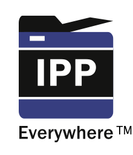

Google Custom Search
IPP EverywhereTM
Printing Without Printer Drivers or Apps
Printing Without Printer Drivers or Apps
Loading...
IPP EverywhereTM is a PWG Candidate Standard that defines minimum requirements for clients and printers so that personal computers and mobile devices can find and print to networked and USB printers without using special software. The goal is to make printing as simple as connecting a keyboard or mouse.
Frequently Asked Questions · Technical Specification
Printer Self-Certification Manual and Tools
v1.0 (Last updated August 26, 2014):